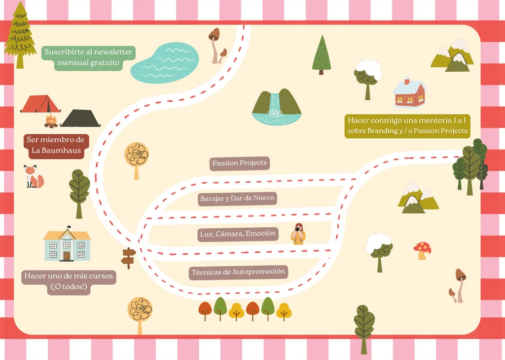

Hola! Te doy la bienvenida a Minicarbono
Un espacio seguro para explorar tu creatividad
Sobre Mi
Me llamo Carla, nací en Buenos Aires y vivo en Berlín.
Mi trabajo es acompañar a otras personas en su camino de autodrescubrimiento creativo.
Siempre con la introspección creativa como bandera, mis propuestas buscan animarte a crear activamente, permitiéndote ser vulnerable y mostrandote al mundo tal cual sos.
¿Con ganas de una nueva aventura?
Te propongo un camino:
Recursos Gratuitos
Con estos recursos te invito a recargar tu mochila creativa, trabajar sobre tu branding personal, explorar la técnica del collage y reconectar con tu niñx interior. ¡Descargalos y empezá hoy mismo!
Saber másCursos Online
Conocé mi oferta de cursos de creatividad introspectiva: Autopromoción para Creativos, Passion Projects, Barajar y Dar de Nuevo y Luz, Cámara, Emoción.
Saber másLa Baumhaus
Un refugio creativo y la comunidad online más amable y constructiva de internet. Es un espacio para pensar y hacer en comunidad, con misiones creativas, club de lectura y cine, charlas en vivo, talleres, encuentros de cowork y bullet journal y mucho más. ¡Sumate y conocenos!
Saber más
Mentorías Individuales
¿Tenés una idea para un Passion Project y te gustaría que vea la luz con orden y estrategia? ¿Querés desarrollar tu branding personal y presencia online? ¡Empecemos un proceso de mentoría!
Saber más
Cartiras Mensuales
Suscribite a mi newsletter gratuito para recibir mis cartas sobre creatividad e inspiración todos los meses